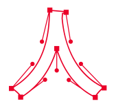

来場者プレゼント。
何が出るのかはお楽しみ！
ガチャガチャを回して、グラフィックデザイン専攻領域の教員がデザインしたオリジナル缶バッジやグッズをゲットしよう！
7.13 Sat
10:00-12:00
13:00-16:00
7.14 Sun
10:00-12:00
13:00-16:00
PLACE 8-205,206
グラフィックガチャガチャ
ワークショップ
極めよう、グラフィックデザイン
2年生から4年生で学習するグラフィックデザインの専門的な課題作品を展示します。
7.13 Sat
終日
7.14 Sun
終日
PLACE 8-205,206
作品展示 (デザインの発展)
作品展示
はじめよう、グラフィックデザイン
1年生、2年生で学習するグラフィックデザインの基礎的な課題作品を展示します。
7.13 Sat
終日
7.14 Sun
終日
PLACE 8-205,206
作品展示 (デザインの基礎)
作品展示
入試から授業のことまで、何でも相談してください。
7.13 Sat
終日
7.14 Sun
終日
PLACE 8-205
進学相談コーナー
進学相談
のぞいてみよう！楽しい授業
グラフィックデザインの授業にビデオカメラが潜入しました。学生たちの熱気を感じて下さい。
7.13 Sat
終日
7.14 Sun
終日
PLACE 8-203
グラフィックデザイン専攻領域
紹介映像
専攻領域紹介
聞きたい知りたい、
グラフィックデザイン専攻領域の実態
グラフィックデザイン専攻領域の学生と教員が、勉強のこと、課題のこと、将来のこと、なんでもお話します。他では言えない聞けない秘密がたくさん聞けるかも？
7.13 Sat
①11:00-
②15:00~
7.14 Sun
①11:00~
②15:00~
PLACE 8-204
グラフィックデザイン専攻領域
トークショー
トークショー
この先、グラフィックデザイン。
